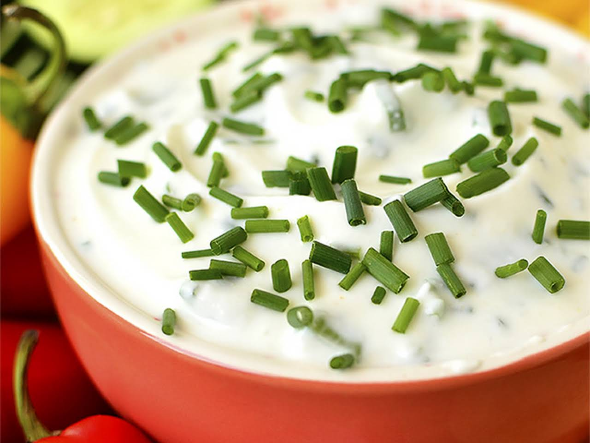

Swiss Chive Spread
This is the Looff family recipe for Swiss Chive Spread!
You'll need:
- 3 Cups (12 Ounces) of Finely Shredded Swiss Cheese
- 3/4 Cup of Mayo (Bonus Points if you make it yourself)
- 1/4 cup of Chopped Chives
- 1/2 tsp Salt
- 1/4 tsp Ground Pepper
Intructions:
- Combine cheese and mayo in a bowl.
- Add chives, salt, and pepper.
- Stir well, cover, and chill!
- Serve with buttery crackers :3
